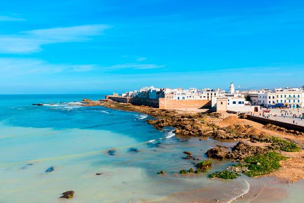
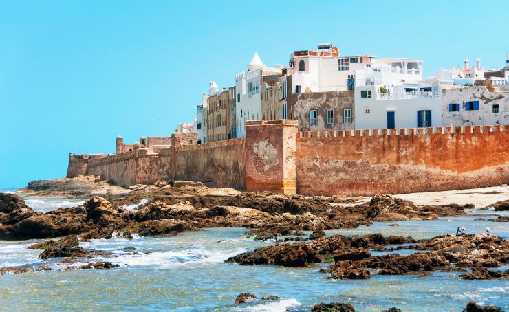
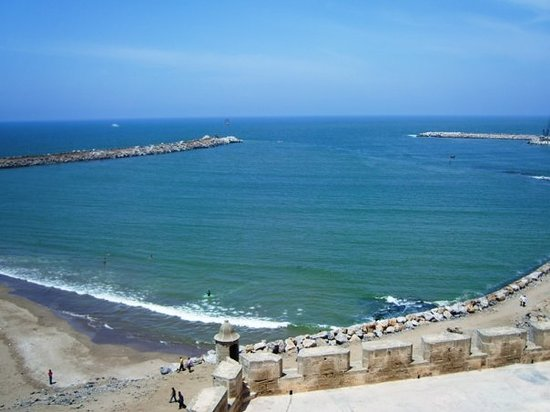

¡SaharaToursGo!
¡SaharaToursGo!
ESSAOUIRA
Esauira, también conocida por la antigua denominación de Mogadur, Mogador en portugués y en español,1 es una ciudad portuaria de Marruecos, situada en la costa occidental atlántica, al norte del cabo Sim.
Es la capital de la provincia homónima, en la región de Marrakech-Safí. Con cerca de 70.000 habitantes, su medina o centro histórico está catalogado por la Unesco como Patrimonio de la Humanidad desde 2001. La economía del lugar gira en torno a la pesca, la industria maderera, textil y alimentaria, y al comercio de productos de artesanía, marquetería y joyería en particular. Dispone de gasoducto y un aeródromo. Esauira alberga anualmente el Festival de Gnaua y Músicas del Mundo de Esauira que atrae a miles de visitantes
HISTORIA
En la Edad Antigua, expediciones de los fenicios exploraron estas costas utilizadas para la búsqueda de un gasterópodo del género murex, de donde obtenían la púrpura, en una especie de factoría ubicada en la isla de Mogador, frente a la ciudad de Esauira.
El 15 de agosto de 1844 una flota francesa, que había bombardeado previamente la ciudad de Tánger, atacó la ciudad en represalia por el apoyo del sultán de Marruecos a los rebeldes argelinos. Las construcciones defensivas fueron seriamente dañadas.
Si llegas en coche tienes que aparcar en Bab Sebaa, final del paseo marítimo, en Bab Marrakech o cerca del puerto ya que en la medina no se puede circular con vehículos. La medina es una visita ineludible, de hecho ha sido declarada patrimonio de la humanidad por la UNESCO. Blanca y azul, invita a pasear y descubrir en el interior de las murallas del siglo XVIII, sus espléndidas casas con puertas y ventanas labradas de delicados detalles arquitectónico.
Rodeada de murallas, con varias puertas, las más conocidas son: al norte Bab Doukkala, al este, Bab Marrakech con su bastión , junto al paseo marítimo Bab Sebaa, sobre las murallas los cañones miran al océano

PLAYAS ESSAOUIRA
No olvidar la playas de la ciudad, amplias, de arena fina y con vista a la bahía, donde podemos practicar deportes como el Windsurf, pues predominan los vientos Alisios, pasear en los típicos dromedarios, o navegar en un pequeño barco turístico rodeando la isla de Mogador (Purpureas). Cerca de la desembocadura de un pequeño río, junto al Faro, destacar el Mausoleo de Sidi Magdoul
Las islas Purpúreas albergan una reserva ornitológica poblada de gaviotas y halcones eleonora. En el siglo I, los romanos instalaron una fabrica de púrpura que extraían de los moluscos de sus rocas, todavía subsisten las ruinas de una gran prisión de finales del siglo XIX
